DP · Milestone 3 · 2.39:1 · Shot numbers refer to the animatic cut in cut-timeline.md, cue numbers to lighting-plan.md. The perspective frames (Pos A and B) are drawn from the real set geometry and the 32 mm lens by make_boards.py, so the panel counts are what the camera will actually see.
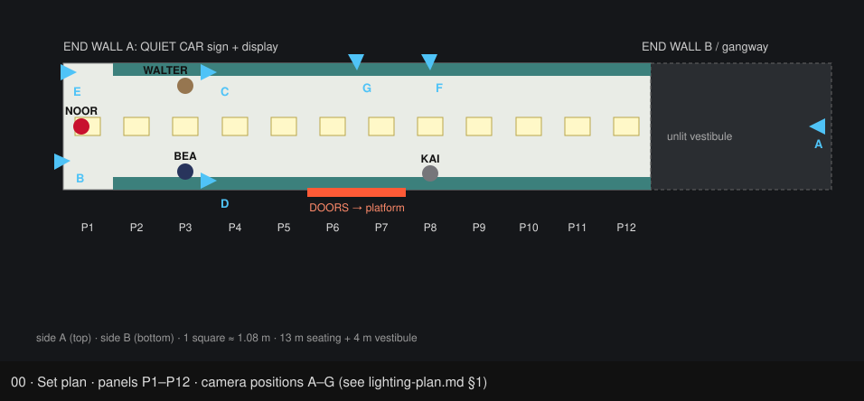
00 · Set plan · panels P1–P12 · camera positions A–G (see lighting-plan.md §1)
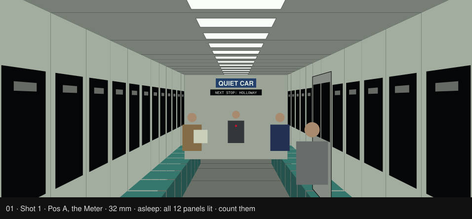
01 · Shot 1 · Pos A, the Meter · 32 mm, vestibule, 1.65 m · asleep: all 12 panels lit · count them
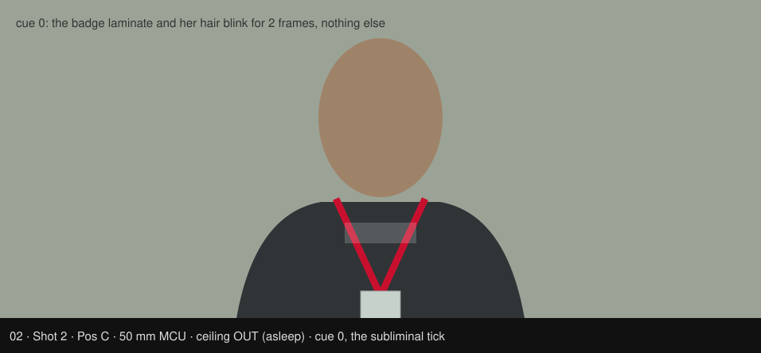
02 · Shot 2 · Pos C · 50 mm MCU · ceiling OUT (asleep) · cue 0, the subliminal tick
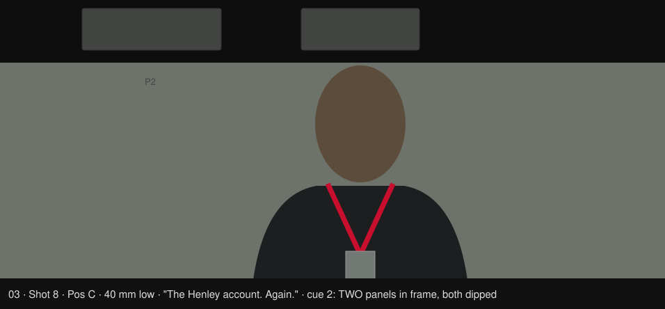
03 · Shot 9 · Pos W · 32 mm low · "The Henley account. Again." · cue 2: P1 and P2 dipped, countable · Walter and Bea flank her
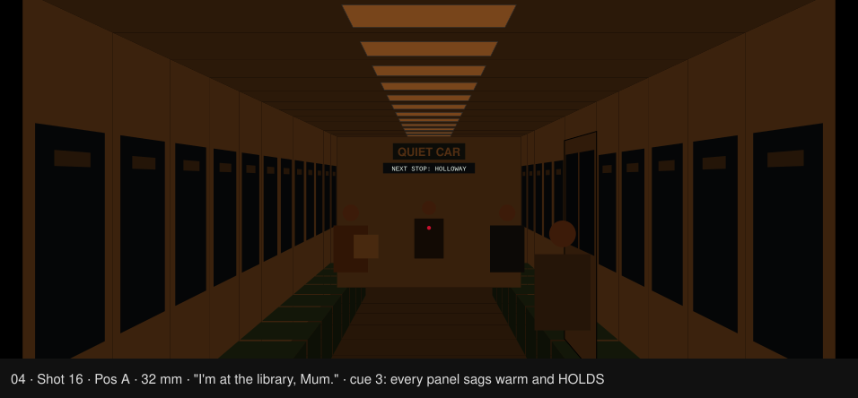
04 · Shot 16 · Pos A · 32 mm · "I'm at the library, Mum." · cue 3: every panel sags warm and HOLDS
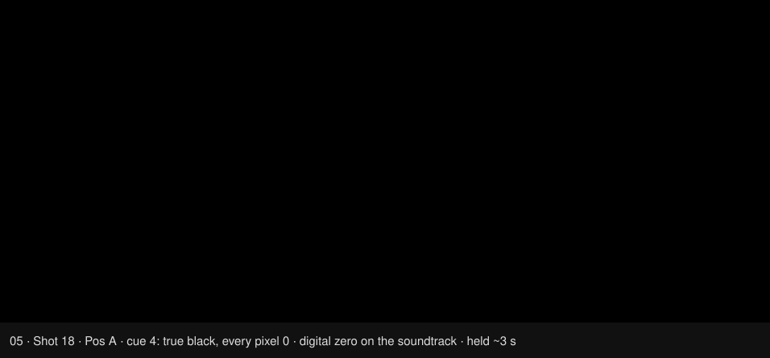
05 · Shot 18 · Pos A · cue 4: true black, every pixel 0 · digital zero on the soundtrack · held ~3 s
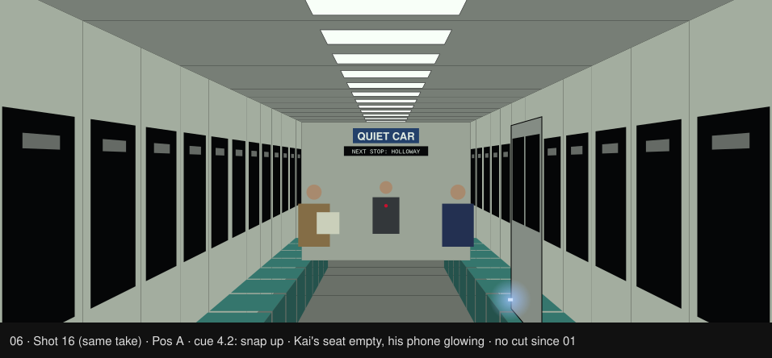
06 · Shot 18 (no cut through the black) · Pos A · cue 4.up: snap up · Kai's seat empty, his phone glowing
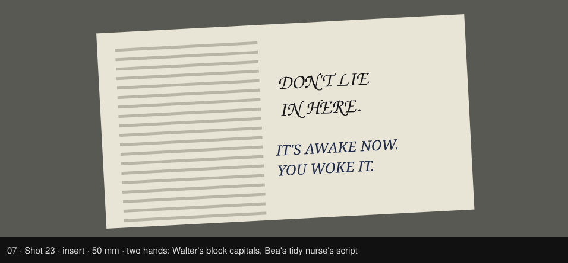
07 · Shot 23 · insert · 50 mm · two hands: Walter's block capitals, Bea's tidy nurse's script
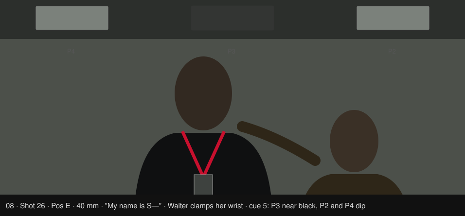
08 · Shot 26 · Pos T · 32 mm, from Kai's empty seat · "My name is S—" · Walter clamps her wrist · cue 5: P3 near black, P2 and P4 dip
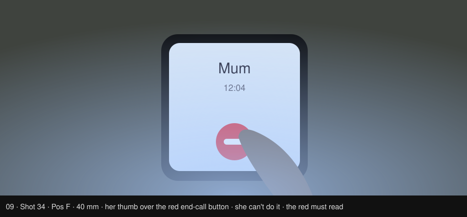
09 · Shot 32 · Pos F · 40 mm · her thumb over the red end-call button · she can't do it · the red must read
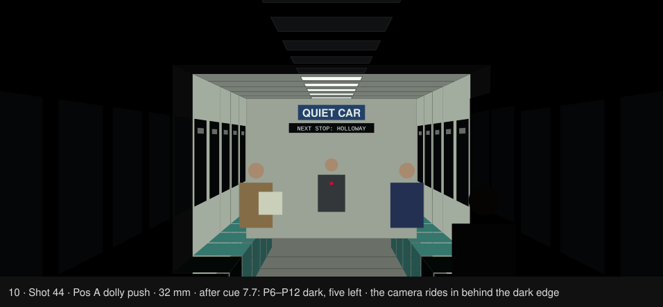
10 · Shot 42 · mid-push, A → A2 · 32 mm · after cue 7.3: P10–P12 dark overhead · the camera rides in behind the dark edge
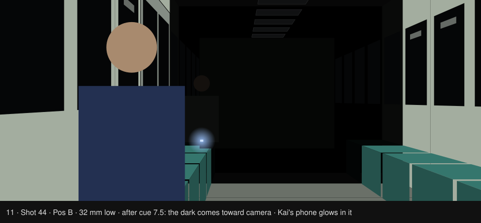
11 · Shot 44 · Pos B · 32 mm low · after cue 7.5: the dark comes toward camera · Kai's phone glows in it
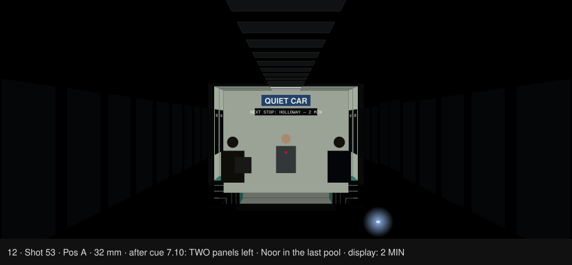
12 · Shot 50 · Pos A2 · 32 mm · after cue 7.10: TWO panels left · Noor in the last pool · display: 2 MIN
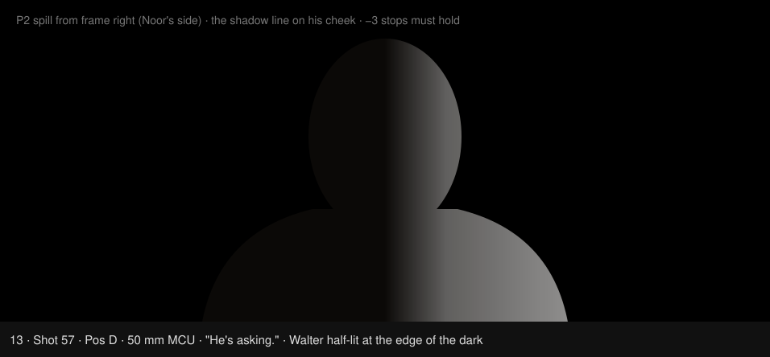
13 · Shot 53 · Pos D · 50 mm MCU · "He's asking." · Walter half-lit at the edge of the dark
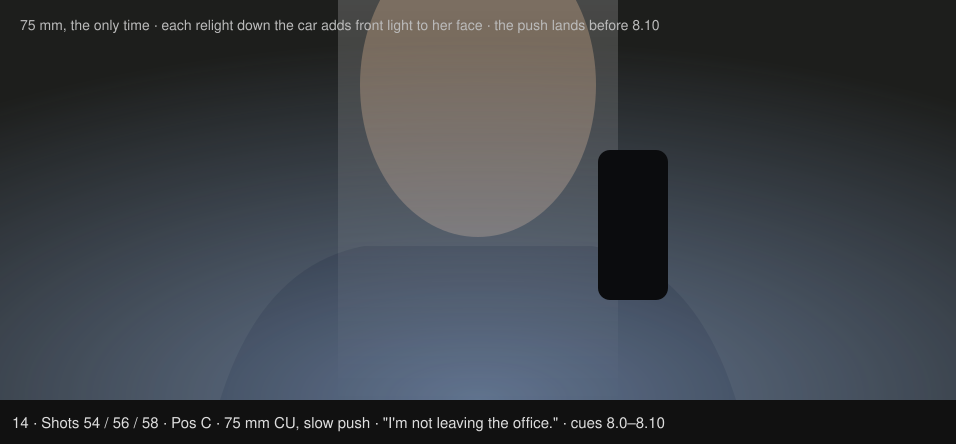
14 · Shots 54 / 56 / 58 · Pos C · 75 mm CU, slow push · "I'm not leaving the office." · cues 8.0–8.10
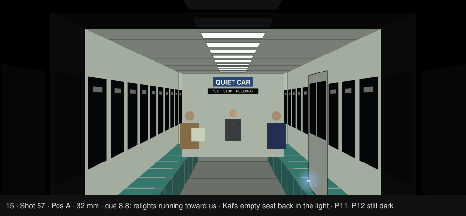
15 · Shot 57 · Pos A · 32 mm · cue 8.8: relights running toward us · Kai's empty seat back in the light · P11, P12 still dark
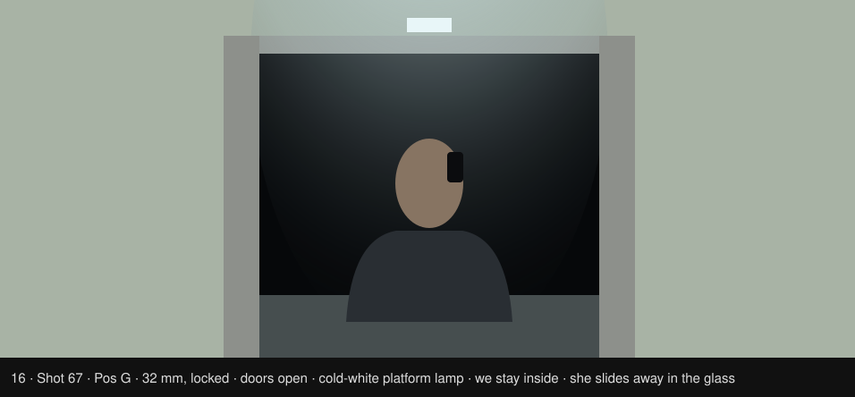
16 · Shot 62 · Pos G · 32 mm, locked · doors open · cold-white platform lamp · we stay inside · she slides away in the glass
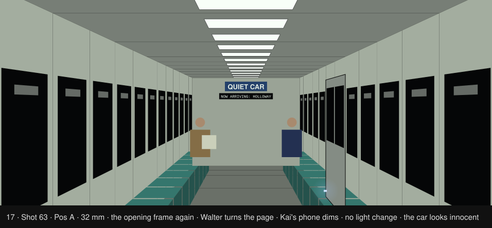
17 · Shot 63 · Pos A · 32 mm · the opening frame again · Walter turns the page · Kai's phone dims · no light change · the car looks innocent